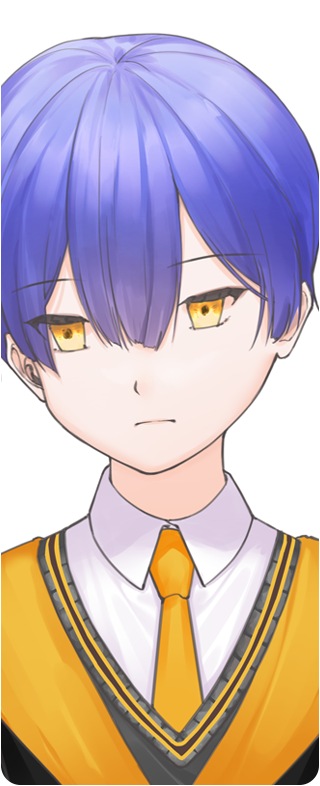
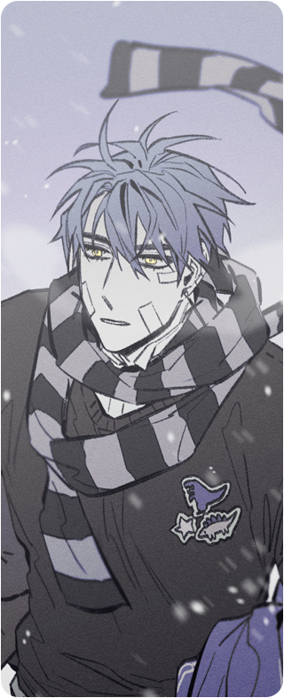
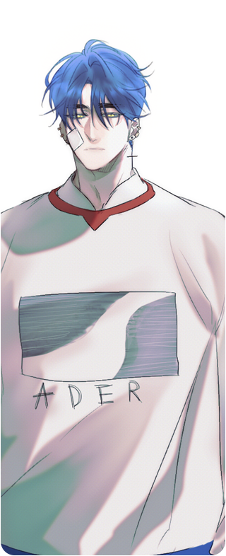
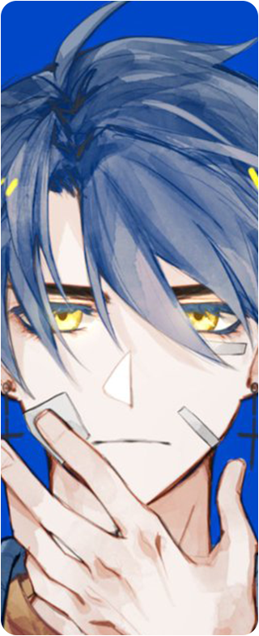
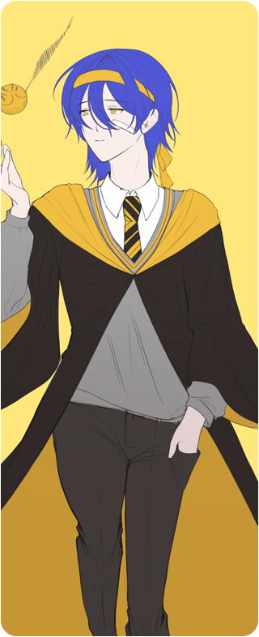
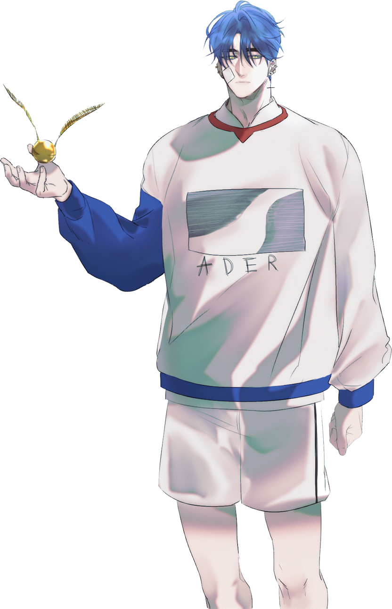

Eliot Acxel Ryder
엘리엇 액셀 라이더





[ 광풍제월 ]
“ 경기 종료는 제가 선언하는 거라서요…. ”
나이
27세
기숙사
후플푸프
“페어플레이, 그래, 중요한 가치지.”
진영
불사조 기사단
직업
푸들미어 유나이티드 소속 수색꾼
국적
영국인
혈통
머글 태생
키/무게
195cm/101kg
성별
시스젠더 남성
지팡이
벚나무/유니콘의 털/11인치/튼튼함
성격
# 사차원 전파계
기본적으로 머리가 좋은 인물이라 매사에 엉뚱하기 짝이 없고, ‘도대체 그게 무슨 소리야’ 싶은 발언을 일삼는다. 생각의 흐름이 타의 추종을 불허하도록 이상하게 굽이치며 스스로 고삐를 잡을 생각도 없다. 어딜 가나 따라 붙는 평가는 ‘4차원 전파계’. 엘리엇 라이더가 무슨 생각을 하는지 완전히 파악하는 사람이 있다면, 그자는 레질리먼시를 구사하는 게 분명하다는 우스갯소리마저 존재한다.
# 타오르는 승부사
별개로 운동을 하는 사람이라서 그런지, 특히 근래에 팀 스포츠에 푹 빠져 지내서인지 승부욕 하나만큼은 어딜 가나 뒤지지 않는다. 승부라면 이왕지사 이기고 보자는 쪽이고, 지더라도 다음엔 이기겠다는 마음으로 타오른다. 물론 그는 공정한 게임을 원한다. 룰에서 어긋나는 짓을 해서까지 승리를 쟁취하지는 않는다는 말이다. 다만 규칙 안에서 허락된 일이라면 생각보다는 거리낌이 없는 면이 있다. 그래도 자신의 판단이 반칙이나 파울에 해당한다면 빠르게 사과하거나, 심지어 승리를 반납하기도 한다.
# 단순한 사고의 흐름
사고의 흐름이 이상한 것뿐이지, 한편 지나간 일로 골몰하거나 후회하느라 시간을 까먹는 타입은 아니다. 독특할 뿐이지, 복잡한 사람은 아니다. 스스로도 적당히 단순무식하다고 표현할 때가 많다. 자존감이 떨어지는 스타일도 아니고 자존심이 센 편도 아니어서 스스로를 낮추어 말해도 대체로 예의 차리는 겸손일 뿐 정말로 제 살을 깎아가며 우울해하진 않는다. 여전히 일상 생활에 있어서는 템포가 느리고 게으른 구석이 있다. 좋아하는 일엔 열심히, 아닌 일은 해야겠다, 해야 한다는 상황이 조성되지 않는 이상 좀 느긋하게 해치운다.
기타
● 에든버러 출신, 양친 모두 머글이다. 아버지가 동양의 불교 미술사를 전공하여 석사 학위를 따러 일본에 유학한 경력이 있다. 석사 학위도 땄지만, 그 시절 교토에서 지내며 유도라는 스포츠에 홀딱 빠져서 유도 단증을 따온 바람에 막상 영국 귀국 후엔 학업을 더 이어나가지 않고 유도 도장을 차려서 어린이들을 가르치는 직종에 종사했다. 어머니는 도장의 경영을 도맡고 있다. 형제 없이 자란 외동이다.
어려서부터 유도를 했고 호그와트에 입학해서는 퀴디치에 정신이 나갔다. 2학년부터 후플푸프 소속 퀴디치팀에서 수색꾼으로 선발되었으며 7학년까지 단 한 해도 빠짐없이 날아다녔다. 교내 퀴디치 리그에서 우승한 횟수는 총 2번이지만, 본인 말로는 라이벌이었던 슬리데린의 스펜서 선배만 없었어도 7학년까지 내내 우승했을 거라고 투덜거린다.
○ 슬리데린의 에이더스 스펜서는 그가 5학년이던 해에 부상으로 은퇴했다.
○ 유도 도장에 다니던 시절부터 알았던 머글 친구들이 많다. 거의 동네 친구들. 호그와트 재학 시절엔 그들에게 프랑스로 유학 간다고 거짓말을 해야만 했다. (양심이 아팠다.)
● 7학년으로 졸업하던 해, 학교 리그 도중 푸들미어 유나이티드의 스카우터로부터 연락을 받았다. 수색꾼으로 기용하겠다. 단, 벤치에서 시작한다는 조건으로. 뛰어나게 유리한 조건도 아니었다지만, 엘리엇으로써는 기다리고 기더리던 지명이다. 가장 사랑하는 팀의, 가장 사랑하는 포지션이지 않나. 그러나 그는 그 제안을 받아들이지 않고 졸업 후로 대답을 유보했다. 그의 주변에는 퀴디치를 사랑함에도 불구하고 퀴디치 경기장을 떠나야 했던 사람이 너무 많았다. 엘리엇 혼자 멀리 날아가버린다면, 너무 치사하고 비겁한 일이 되는 것만 같았다. 엘리엇 라이더는 그들보다 뛰어나지 않았다. 운이 좋았던 거지.
결국 엘리엇은 졸업 후에 후플푸프 선배들 및 유달리 후플푸프 선수들과 친했던 스펜서 선배가 동창회를 한다는 소식을 듣고 그 자리를 무작정 찾아간다. 이야기를 들은 선배들은 엘리엇을 그야말로 바보 취급했다. “멍청아, 그렇게 좋은 제안이면 냅다 하겠다고 해야지!” 우리가 더는 날지 못하게 되었다는 이유만으로 네가 날지 못할 이유가 어디에 있어, 네가 더 멀리 날아준다면 우린 더불어 행복해져, 망할 놈의 엘리엇 라이더.
그 자리에서 엘리엇이 태어나 처음으로 많이 울었다는 건, 마법사 사회에선 조금 유명한 일화가 되었을지도 모르겠다. 그놈의 짓궂은 선배들이 좀처럼 그 일을 함묵해주지 않고 동네방네 소문을 내고 다닌 바람에 스포츠 잡지에 기사도 나와버렸다. 아무튼, 엘리엇은 그날 이후 결심을 굳히고 푸들미어 유나이티드에 입단한다.
지금은 푸들미어 유나이티드의 1군 수색꾼이니, 마법사 사회에서는 제법 유명인사라고 할만 하다. 팬덤도 있는 편이고. 다만, 엘리엇의 팬들조차 그의 기이하고 독특한 사고의 흐름을 예측하진 못한다고….
기본적으로 승률이 좋다. 스피드로 항상 압도하는 수준은 아니지만, 엘리엇이 출전한 경기에선 상대편 수색꾼이 특히나 기를 못 쓰고 추락하는 경우가 부지기수. 페이크도 잘 쓰고, 무엇보다 도대체 무슨 기술을 언제 어떻게 쓸지 예측이 어려워서 상대하기가 버겁단다. 그러나 때로 그의 괴짜 같은 사고 방식으로 풀어나가는 경기를 과감히 돌파하는 수색꾼과 만나면 패배하기도 한다….
팬 서비스가 나쁘지 않다는 평가를 받는데, 사진 찍어달라면 찍어주고 사인도 잘 해준다. 의외로 손 하트 같은 것도 무표정으로 잘해주는 모양.
● 오타쿠 기질이 대단해서 서브컬쳐에도 능하고, 특히 공룡에 해박하다. 어느 도시에 가든 자연사 박물관을 방문하는 게 관례일 만큼. 제일 좋아하는 공룡은 브라키오사우루스.
● 대체로 상대에게 존대한다. 그의 아버지가 어린 시절에 버릇을 잡아줄 때 사랑하는 사람들을 존중할 줄 알아야 한다고 당부했기 때문이다. 상당히 무뚝뚝한 인물이고 말수도 적지만, 그런 만큼 자신의 말 한 마디가 가지는 무게를 알고 있다.
● 덩치 큰 부엉이를 한 마리 기른다. 이름은 허밍 버드.
● 타고 다니는 빗자루 기종은 파이어볼트. 돈 벌어서 어디에 쓰나? 빗자루에 재투자했다.
● 생각보다도 벌 만큼은 벌어서 삶에 별 곤란이 없다. 아무래도 마법사 사회가 어마어마한 돈을 투자하는 퀴디치 리그의 스타다 보니까. 그러나 딱히 돈을 쓸 줄 아는 건 아니어서 돈 벌어서 뭐가 좋냐고 물어보면 궁금한 컵라면을 사먹을 수 있어서 좋다는 황당한 대답이나 튀어나온다.
● 연애 사정이 전무했다, 팬들 사이에선 이녀석 스니치랑 결혼했냐는 말이 나올 정도.
● 스스로의 천재성에 대한 확신이 상당하며, 혈통으로 흠집을 잡아도 별로 타격이 오지 않는다. 실제로 그는 순수 혈통 마법사보다 늦게 퀴디치를 배워서 퀴디치로 자신이 누구인지를 증명했고, 무엇을 할 수 있는 인간인지를 알았다. 그런 구석을 재수없게 생각하는 사람들이 종종 있긴 하다.
● 기본적으로 그는 인간보다는 소위 ‘인외’에 가까운 정서로 움직인다.
